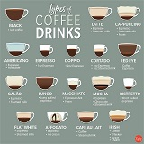

Please visit our store and explore
Coffee is a brewed drink prepared from roasted coffee beans, the seeds of berries from certain Coffea species. When coffee berries turn from green to bright red in color – indicating ripeness – they are picked, processed, and dried. Coffee is darkly colored, bitter, slightly acidic and has a stimulating effect in humans, primarily due to its caffeine content.[3] It is one of the most popular drinks in the world,[4] and can be prepared and presented in a variety of ways (e.g., espresso, French press, caffè latte, or already-brewed canned coffee). It is usually served hot, although chilled or iced coffee is common. Sugar, sugar substitutes, milk or cream are often used to lessen the bitter taste.